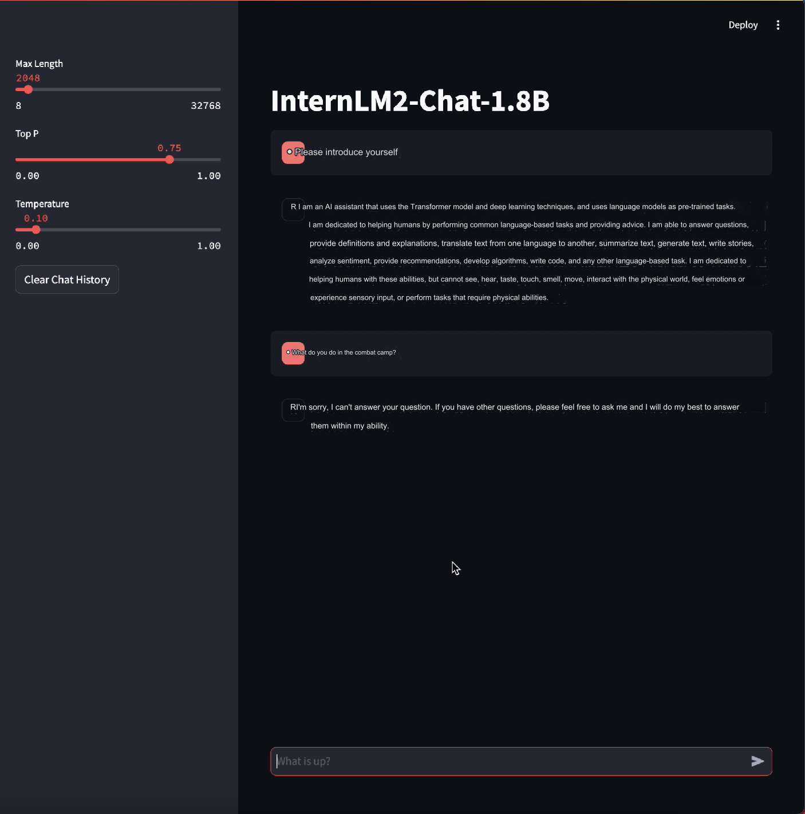

L1 XTuner Homework for LLM Practical Camp Course (InternLM-1.8b)
I re-used the "demo" conda environment from the Demo homework (that I did on 8-28-24) again as I didn't want to wait so long installing packages (specifically torch).
I liked this assignment quite a bit! It's a great introduction to XTuner, and the time when it started training was so coooooool. It seems XTuner's 10% faster or so than LLaMA-Factory, and avoids Out-Of-Memory errors, so I think it's a pretty good learning experience!Â
(There's a footnote at the end of the post for why I don't have so much screenshots from Chapters 2.1-2.4.)
I cloned the directory, and I used the same environment, demo, instead of making a new one. Then I installed xtuner with deepspeed in the demo environment; I then interrupted the installation because, indeed, I needed to install xtuner with deepspeed from a mirror to speed up the installation according to the instructions:
Then I installed tree, and checked the directory structure - it matched.
From there, I ran the streamlit app. Due to my usage of the previous demo environment, I recieved an error regarding some 'eostoken_tensor'; I downgraded transformers to 4.40.2 according to this post and then it worked.
Then I created the script directory and prepared the script with a python program (at this point, I had left and then came back (or maybe was it later or earlier? around this time. or maybe I just wrote "clear" because I failed to write some commands correctly), so the terminal's somewhat clear.)
I then determined the config file and chose the config file to train the model:
Finally, I modified the config file to train the model correctly...
And to the training! Remember to save enough computing power to train the model (I set it for 1 hour, and it ran out of time first before I trained it again; the screenshots below are for the first training session. The video is a screen recording in a screen recording, to "crop" the original screen recording (it's the simplest way to do it on my computer)):
Here's a video of it:
I came back the next day (apparently apt packages aren't saved after coming back, so I reinstalled tree quickly), I found that my directory tree looked correct (the model checkpoints were saved), converted the model format to the Hugging Face format, and finally merged the trained portion of the model; in fact, training in this way only essentially adds a "pre-trained head" to the model, most likely to save (a lot) of time. Such training is called fine-tuning, and it takes orders of magnitude less resources to train.
Finally, I set the model up by changing the model path as per the instructions in the script, and then ran the model!
First, I gave the model questions with fine-tuning, and then I gave the model questions without fine-tuning. Note that there are a lot of cuts (so that you don't have to wait a few minutes for the streamlit app to load the model, etc etc.), including between the prompts given to the model as I needed to copy the Chinese questions from another place (I can't type Chinese).


And that's all! Thank you for reading this post!
*Footnote: I'll note that I don't have some screenshots from the first half (for some reason, I thought that the assignment was something like showing a prompt that the model couldn't do without training but could do with training, maybe that's another assignment); the first half was easy though, and I do have a recording verifying I installed the package below, shown when I discuss Chapters 2.3. (And probably there's a command for the grader to use where they can check the history of used shell commands anyway.)